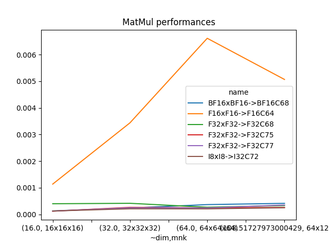
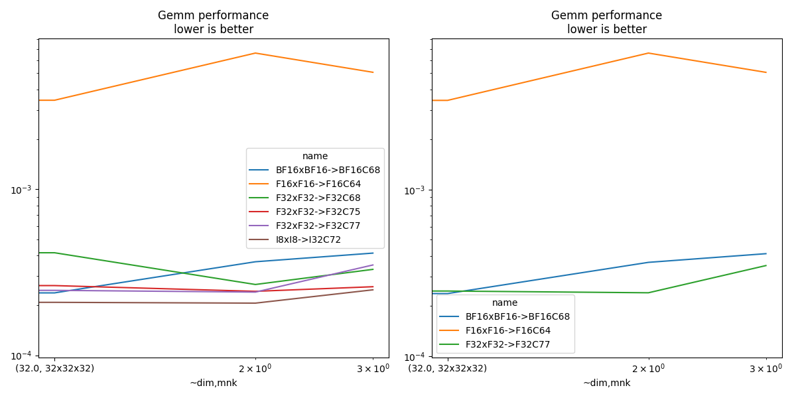

Note
Go to the end to download the full example code
Measuring Gemm performance with different input and output tests#
This benchmark looks into various combinations allowed by functions cublasLtMatmul. The tested configurations are available at cuda_gemm.cu.
import pprint
import warnings
from itertools import product
from tqdm import tqdm
import matplotlib.pyplot as plt
from pandas import DataFrame
from onnx_extended.ext_test_case import unit_test_going, get_parsed_args
try:
from onnx_extended.validation.cuda.cuda_example_py import (
gemm_benchmark_test,
get_device_prop,
)
has_cuda = True
except ImportError:
# CUDA not available.
has_cuda = False
gemm_benchmark_test = None
if has_cuda:
prop = get_device_prop()
if prop["major"] <= 0:
# No CUDA.
dtests, ddims = "", ""
elif prop["major"] < 7:
# No float 8.
dtests, ddims = "0,1,2,3,4,15", "16,32,64,64x128x92"
elif prop["major"] < 9: # T100, A100
# No float 8.
dtests, ddims = (
"0,1,2,3,4,15",
"16,32,64,128,256,512,1024,2048,4096,8192,"
"128x768x768,128x3072x768,128x768x3072",
)
else:
dtests, ddims = (
"0,1,2,3,4,5,6,7,11,14,15",
"16,32,64,128,256,512,1024,2048,4096,8192,16384,"
"128x768x768,128x3072x768,128x768x3072",
)
else:
dtests, ddims = "", ""
script_args = get_parsed_args(
"plot_bench_gemm_f8",
description=__doc__,
dims=(
"16,32" if unit_test_going() else ddims,
"square matrix dimensions to try, comma separated values",
),
tests=(
"0,1,2" if unit_test_going() else dtests,
"configuration to check, see cuda_gemm.cu",
),
warmup=2 if unit_test_going() else 5,
repeat=2 if unit_test_going() else 10,
expose="repeat,warmup",
)
Device#
if has_cuda:
prop = get_device_prop()
pprint.pprint(prop)
else:
print("CUDA is not available")
prop = dict(major=0)
{'clockRate': 1569000,
'computeMode': 0,
'concurrentKernels': 1,
'isMultiGpuBoard': 0,
'major': 6,
'maxThreadsPerBlock': 1024,
'minor': 1,
'multiProcessorCount': 10,
'name': 'NVIDIA GeForce GTX 1060',
'sharedMemPerBlock': 49152,
'totalConstMem': 65536,
'totalGlobalMem': 6442319872}
Benchmark#
def type2string(dt):
dtests = {
0: "F32",
2: "F16",
14: "BF16",
28: "E4M3",
29: "E5M2",
3: "I8",
10: "I32",
}
return dtests[int(dt)]
dims = []
tests = []
if gemm_benchmark_test is not None:
for d in script_args.dims.split(","):
if "x" in d:
spl = d.split("x")
m, n, k = tuple(int(i) for i in spl)
dims.append((m, n, k))
else:
dims.append(int(d))
tests = list(int(i) for i in script_args.tests.split(","))
pbar = tqdm(list(product(tests, dims)))
obs = []
for test, dim in pbar:
pbar.set_description(f"type={test} dim={dim}")
if test in {8, 9, 10, 12, 13}:
warnings.warn(f"unsupported configuration {test}.")
continue
mdim = dim if isinstance(dim, int) else max(dim)
if mdim < 128:
n, N = script_args.warmup * 8, script_args.repeat * 8
elif mdim < 512:
n, N = script_args.warmup * 4, script_args.repeat * 4
elif mdim < 8192:
n, N = script_args.warmup * 2, script_args.repeat * 2
else:
n, N = script_args.warmup, script_args.repeat
if isinstance(dim, int):
gemm_args = [dim] * 6
else:
m, n, k = dim
lda, ldb, ldd = k, k, k
gemm_args = [m, n, k, lda, ldb, ldd]
# warmup
gemm_benchmark_test(test, N, *gemm_args)
# benchmark
res = gemm_benchmark_test(test, N, *gemm_args)
# better rendering
res["test"] = test
update = {}
for k, v in res.items():
if "type_" in k:
update[k] = type2string(v)
if k.startswith("t-"):
update[k] = res[k] / res["N"]
update["compute_type"] = f"C{int(res['compute_type'])}"
for c in ["N", "m", "n", "k", "lda", "ldb", "ldd"]:
update[c] = int(res[c])
update["~dim"] = (update["k"] * max(update["m"], update["n"])) ** 0.5
update["mnk"] = f"{update['m']}x{update['n']}x{update['k']}"
update["name"] = (
f"{update['type_a']}x{update['type_b']}->"
f"{update['type_d']}{update['compute_type']}"
)
res.update(update)
obs.append(res)
if unit_test_going() and len(obs) > 2:
break
df = DataFrame(obs)
df.to_csv("plot_bench_gemm_f8.csv", index=False)
df.to_excel("plot_bench_gemm_f8.xlsx", index=False)
print(df.head().T)
df.head().T
0%| | 0/24 [00:00<?, ?it/s]
type=0 dim=16: 0%| | 0/24 [00:00<?, ?it/s]
type=0 dim=16: 4%|▍ | 1/24 [00:06<02:19, 6.07s/it]
type=0 dim=32: 4%|▍ | 1/24 [00:06<02:19, 6.07s/it]
type=0 dim=32: 8%|▊ | 2/24 [00:06<00:56, 2.56s/it]
type=0 dim=64: 8%|▊ | 2/24 [00:06<00:56, 2.56s/it]
type=0 dim=(64, 128, 92): 8%|▊ | 2/24 [00:06<00:56, 2.56s/it]
type=0 dim=(64, 128, 92): 17%|█▋ | 4/24 [00:06<00:20, 1.01s/it]
type=1 dim=16: 17%|█▋ | 4/24 [00:06<00:20, 1.01s/it]
type=1 dim=32: 17%|█▋ | 4/24 [00:06<00:20, 1.01s/it]
type=1 dim=32: 25%|██▌ | 6/24 [00:06<00:10, 1.76it/s]
type=1 dim=64: 25%|██▌ | 6/24 [00:06<00:10, 1.76it/s]
type=1 dim=(64, 128, 92): 25%|██▌ | 6/24 [00:06<00:10, 1.76it/s]
type=1 dim=(64, 128, 92): 33%|███▎ | 8/24 [00:06<00:05, 2.72it/s]
type=2 dim=16: 33%|███▎ | 8/24 [00:06<00:05, 2.72it/s]
type=2 dim=32: 33%|███▎ | 8/24 [00:06<00:05, 2.72it/s]
type=2 dim=32: 42%|████▏ | 10/24 [00:06<00:03, 3.72it/s]
type=2 dim=64: 42%|████▏ | 10/24 [00:06<00:03, 3.72it/s]
type=2 dim=(64, 128, 92): 42%|████▏ | 10/24 [00:06<00:03, 3.72it/s]
type=2 dim=(64, 128, 92): 50%|█████ | 12/24 [00:07<00:02, 4.82it/s]
type=3 dim=16: 50%|█████ | 12/24 [00:07<00:02, 4.82it/s]
type=3 dim=32: 50%|█████ | 12/24 [00:07<00:02, 4.82it/s]
type=3 dim=32: 58%|█████▊ | 14/24 [00:07<00:02, 3.74it/s]
type=3 dim=64: 58%|█████▊ | 14/24 [00:07<00:02, 3.74it/s]
type=3 dim=64: 62%|██████▎ | 15/24 [00:08<00:03, 2.43it/s]
type=3 dim=(64, 128, 92): 62%|██████▎ | 15/24 [00:08<00:03, 2.43it/s]
type=3 dim=(64, 128, 92): 67%|██████▋ | 16/24 [00:09<00:03, 2.04it/s]
type=4 dim=16: 67%|██████▋ | 16/24 [00:09<00:03, 2.04it/s]
type=4 dim=32: 67%|██████▋ | 16/24 [00:09<00:03, 2.04it/s]
type=4 dim=32: 75%|███████▌ | 18/24 [00:09<00:01, 3.07it/s]
type=4 dim=64: 75%|███████▌ | 18/24 [00:09<00:01, 3.07it/s]
type=4 dim=(64, 128, 92): 75%|███████▌ | 18/24 [00:09<00:01, 3.07it/s]
type=4 dim=(64, 128, 92): 83%|████████▎ | 20/24 [00:09<00:00, 4.21it/s]
type=15 dim=16: 83%|████████▎ | 20/24 [00:09<00:00, 4.21it/s]
type=15 dim=32: 83%|████████▎ | 20/24 [00:09<00:00, 4.21it/s]
type=15 dim=64: 83%|████████▎ | 20/24 [00:09<00:00, 4.21it/s]
type=15 dim=64: 96%|█████████▌| 23/24 [00:10<00:00, 6.34it/s]
type=15 dim=(64, 128, 92): 96%|█████████▌| 23/24 [00:10<00:00, 6.34it/s]
type=15 dim=(64, 128, 92): 100%|██████████| 24/24 [00:10<00:00, 2.39it/s]
0 ... 4
t-total 0.000257 ... 0.00024
t-clean 0.000002 ... 0.000005
t-gemm_in 0.000041 ... 0.000048
t-setup 0.000025 ... 0.00003
t-stream_create 0.0 ... 0.0
N 80 ... 80
epiloque 1.0 ... 1.0
ldd 16 ... 16
t-workspace_free 0.000017 ... 0.000016
algo 11.0 ... 11.0
t-gemm_sync 0.000218 ... 0.000198
t-stream_destroy 0.000005 ... 0.000007
workspace_size 1048576.0 ... 1048576.0
m 16 ... 16
k 16 ... 16
n 16 ... 16
compute_type C68 ... C77
lda 16 ... 16
type_a F32 ... F32
ldb 16 ... 16
t-gemm 0.000071 ... 0.000085
type_b F32 ... F32
t-workspace_new 0.000009 ... 0.000011
type_d F32 ... F32
test 0 ... 1
~dim 16.0 ... 16.0
mnk 16x16x16 ... 16x16x16
name F32xF32->F32C68 ... F32xF32->F32C77
[28 rows x 5 columns]
Test definition#
name test type_a type_b type_d compute_type
0 BF16xBF16->BF16C68 4 BF16 BF16 BF16 C68
1 F16xF16->F16C64 3 F16 F16 F16 C64
2 F32xF32->F32C68 0 F32 F32 F32 C68
3 F32xF32->F32C75 2 F32 F32 F32 C75
4 F32xF32->F32C77 1 F32 F32 F32 C77
5 I8xI8->I32C72 15 I8 I8 I32 C72
Total time and only gemm#
name test type_a ... mnk t-total t-gemm_sync
0 F32xF32->F32C68 0 F32 ... 16x16x16 0.000257 0.000218
1 F32xF32->F32C68 0 F32 ... 32x32x32 0.000420 0.000350
2 F32xF32->F32C68 0 F32 ... 64x64x64 0.000469 0.000397
3 F32xF32->F32C68 0 F32 ... 64x128x92 0.000400 0.000342
4 F32xF32->F32C77 1 F32 ... 16x16x16 0.000240 0.000198
5 F32xF32->F32C77 1 F32 ... 32x32x32 0.000359 0.000307
6 F32xF32->F32C77 1 F32 ... 64x64x64 0.000216 0.000193
7 F32xF32->F32C77 1 F32 ... 64x128x92 0.000417 0.000378
8 F32xF32->F32C75 2 F32 ... 16x16x16 0.000339 0.000303
9 F32xF32->F32C75 2 F32 ... 32x32x32 0.000451 0.000407
10 F32xF32->F32C75 2 F32 ... 64x64x64 0.000385 0.000341
11 F32xF32->F32C75 2 F32 ... 64x128x92 0.000486 0.000430
12 F16xF16->F16C64 3 F16 ... 16x16x16 0.001203 0.001172
13 F16xF16->F16C64 3 F16 ... 32x32x32 0.003306 0.003290
14 F16xF16->F16C64 3 F16 ... 64x64x64 0.006266 0.006250
15 F16xF16->F16C64 3 F16 ... 64x128x92 0.009315 0.009286
16 BF16xBF16->BF16C68 4 BF16 ... 16x16x16 0.000211 0.000149
17 BF16xBF16->BF16C68 4 BF16 ... 32x32x32 0.000261 0.000245
18 BF16xBF16->BF16C68 4 BF16 ... 64x64x64 0.000374 0.000356
19 BF16xBF16->BF16C68 4 BF16 ... 64x128x92 0.000379 0.000363
20 I8xI8->I32C72 15 I8 ... 16x16x16 0.000147 0.000131
21 I8xI8->I32C72 15 I8 ... 32x32x32 0.000210 0.000192
22 I8xI8->I32C72 15 I8 ... 64x64x64 0.000305 0.000253
23 I8xI8->I32C72 15 I8 ... 64x128x92 0.000307 0.000290
[24 rows x 10 columns]
Smaller sets#
if df.shape[0] > 0:
subset = {1, 3, 4, 5, 7}
dfis = dfi[dfi.test.isin(subset)]
print()
print("t-gemm_sync")
pivi = dfis.pivot_table(index=["~dim", "mnk"], columns="name", values="t-gemm_sync")
print(pivi)
print()
print("t-total")
pivi = dfis.pivot_table(index=["~dim", "mnk"], columns="name", values="t-total")
print(pivi)
t-gemm_sync
name BF16xBF16->BF16C68 F16xF16->F16C64 F32xF32->F32C77
~dim mnk
16.00000 16x16x16 0.000149 0.001172 0.000198
32.00000 32x32x32 0.000245 0.003290 0.000307
64.00000 64x64x64 0.000356 0.006250 0.000193
108.51728 64x128x92 0.000363 0.009286 0.000378
t-total
name BF16xBF16->BF16C68 F16xF16->F16C64 F32xF32->F32C77
~dim mnk
16.00000 16x16x16 0.000211 0.001203 0.000240
32.00000 32x32x32 0.000261 0.003306 0.000359
64.00000 64x64x64 0.000374 0.006266 0.000216
108.51728 64x128x92 0.000379 0.009315 0.000417
Plots#
if df.shape[0] > 0:
piv = df.pivot_table(index=["~dim", "mnk"], columns="name", values="t-gemm_sync")
piv.plot(title="MatMul performances")
fig, ax = plt.subplots(1, 2, figsize=(12, 6))
piv.plot(ax=ax[0], title="Gemm performance\nlower is better", logx=True, logy=True)
piv = df[df.test.isin(subset)].pivot_table(
index=["~dim", "mnk"], columns="name", values="t-gemm_sync"
)
if piv.shape[0] > 0:
piv.plot(
ax=ax[1], title="Gemm performance\nlower is better", logx=True, logy=True
)
fig.tight_layout()
fig.savefig("plot_bench_gemm_f8.png")
- 
- 
Total running time of the script: (0 minutes 16.708 seconds)